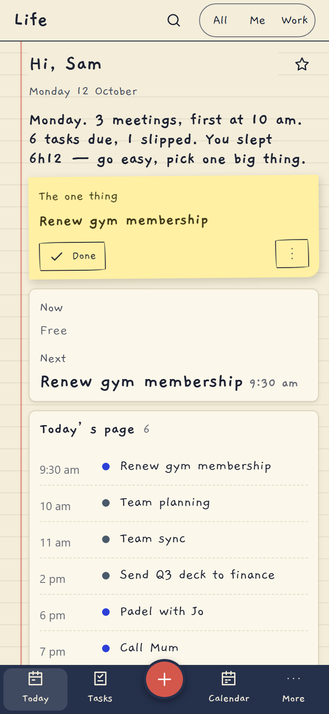
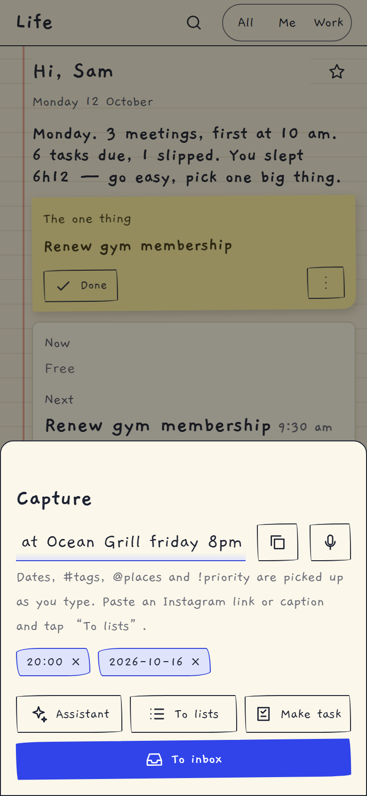
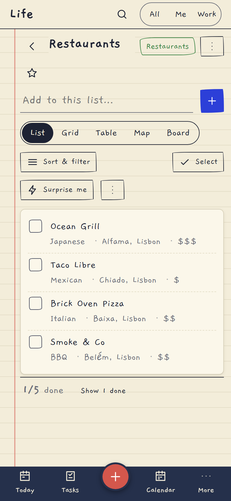
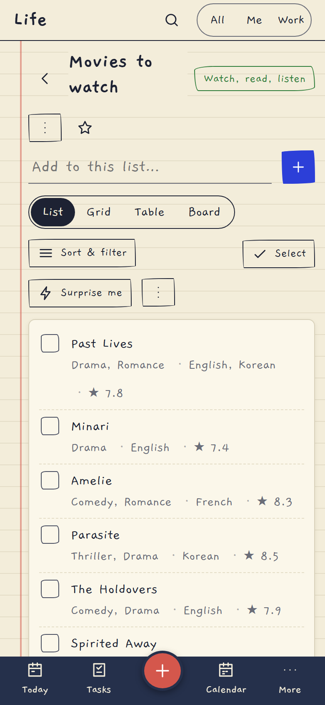
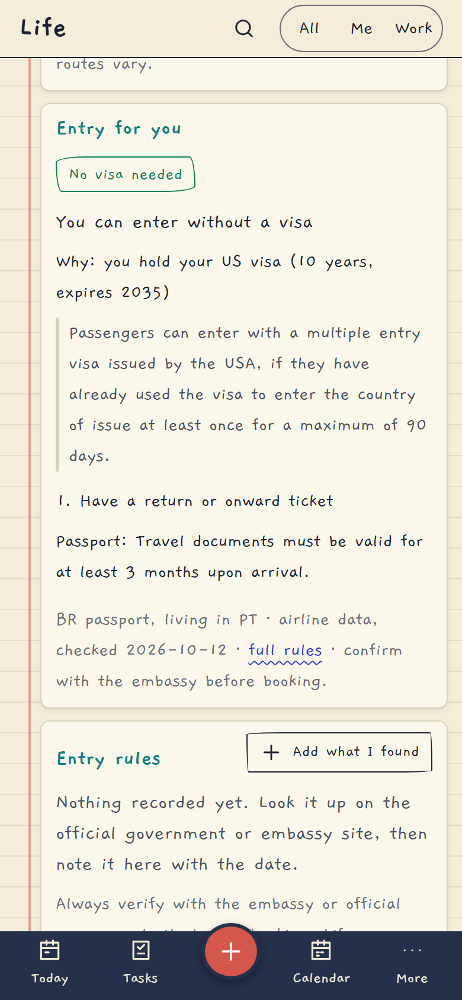

Life
Your day, quietly.
Save a restaurant from an Instagram post, and it lands in the right list with its cuisine, area and price. Ask what you need for a country, and it tells you in one line, based on your passport and the visas you hold. Open it with Face ID.

What's inside
Today & capture
One calm page for the day, and a capture box that understands "dinner friday 8pm #family !high". Swipe a task to finish it.
Lists that file themselves
Share an Instagram post, a web page or a screenshot. Places, films and series are read, filed, de-duplicated and filled in (cuisine, area, price, genre, language, IMDb).
Travel that knows you
"Entry for you" on every country page, where you can go with your passport and visas, change alerts, and a smart pre-trip checklist.
Built for the iPhone
Installable app, Face ID unlock, push notifications, swipe and pull-to-refresh, a Share Sheet Shortcut, an iPhone Calendar feed and a Siri "my day".
Notes, goals, calendar
Markdown notes with backlinks, goals with a required "why", habits with forgiving streaks, a calendar with feeds.
Health & assistant
Garmin summaries and mood, plus an assistant that acts only through confirm cards you approve.
Made for the phone in your pocket




Private by design
- It runs on your computer; your data lives in one SQLite file you can export, back up and delete. No accounts, no analytics, no third-party scripts or fonts.
- Keys you add (OpenAI, Telegram, Gmail, Garmin) are stored encrypted and never sent back to the browser.
- Open it with Face ID; a stolen cookie alone is not enough.
- AI is used sparingly and cheaply: the cheapest model for most jobs, OpenAI's Decisions API where a multiple-choice answer is enough. A typical share costs a fraction of a cent (a long carousel, about a cent).